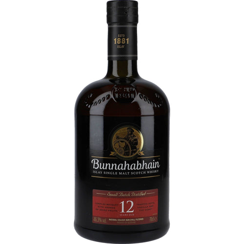

Ken's Whiskies
A personal selection. Heavily weighted towards Islay, which says everything you need to know.
Islay
Caol Ila
12 Year Old · 43% ABV
🥃
Nose
Lemon peel, green apple, sea salt, and delicate wisps of peat smoke. Coastal and fresh.
Palate
Vanilla, flaky sea salt, tart fruit, and coastal peat smoke. Elegant rather than aggressive.
Finish
Sweet smoke, driftwood, and lingering lemon peel. Long and satisfying.
Peat
Islay
Bunnahabhain
12 Year Old · 46.3% ABV

Nose
Dark fruits, raisins, sweet vanilla, roasted walnuts, and a gentle coastal influence. Rich and inviting.
Palate
Oily and chewy. Dried fruits and nuts, charred driftwood, seaweed, and a touch of brine. Unusually unpeated for Islay.
Finish
Salted almonds, walnuts, and a subtle hint of liquorice. Long and full-bodied.
Peat
Islay
Lagavulin
16 Year Old · 43% ABV
🥃
Nose
Deep, elegant smoke with layers of sherry, dried fruit, and dark chocolate. A slow, contemplative nose.
Palate
Rounder and deeper than most Islays. Rich peat, oak, vanilla, and dark fruit. Complex and unhurried.
Finish
Very long. Smoke, spice, and a warming sweetness that stays and stays.
Peat
Islay
Bowmore
12 Year Old · 40% ABV
🥃
Nose
Smoke and sea, with a characteristic floral and honey sweetness underneath. The most balanced of the Islay distilleries.
Palate
Gentle peat, dark chocolate, dried fruits, and a distinctive lavender note. Neither too sweet nor too smoky.
Finish
Medium length. Smoke fades to leave dark fruit and a pleasant bitterness.
Peat
Highland
Dalwhinnie
15 Year Old · 43% ABV
🥃
Nose
Heather honey, vanilla, and gentle floral notes. The highest distillery in Scotland, and it tastes like it.
Palate
Soft and easy. Honey, dried fruit, and a light cereal sweetness. The odd one out in this collection - and none the worse for it.
Finish
Long and gentle. Heather and honey with a warming spice at the end.
Peat
Speyside
Macallan
12 Year Old Sherry Oak · 40% ABV
🥃
Nose
Dried fruits, rich sherry, ginger, and orange peel. The benchmark sherried Speyside.
Palate
Full-bodied and rich. Dark chocolate, toffee, raisins, and clove. No peat whatsoever - a complete contrast to the rest of this list.
Finish
Long and warming. Spiced oak and dried fruit linger pleasantly.
Peat
Islay
Ardbeg
10 Year Old · 46% ABV
🥃
Nose
Dense, dark smoke, sharp citrus, and a tarry edge. Not subtle. Not trying to be.
Palate
A direct punch of peat, ash, citrus oils, and pepper. Compact and powerful, with a salty thread that keeps it dry and precise.
Finish
Long and dry. Citrus peel, ash, and a slightly oily smoke that refuses to leave.
Peat
Isle of Skye
Talisker
10 Year Old · 45.8% ABV
🥃
Nose
Peat and pepper, with coastal brine, a hint of vanilla, and faint plum. Briny and expectedly maritime.
Palate
Warming and peppery with a distinctive sea-air minerality. Peaty but approachable - the gentler side of island whisky.
Finish
Long and peppery. The smoke and salt linger in equal measure. Robert Louis Stevenson approved.
Peat
Islay
Laphroaig
10 Year Old · 40% ABV
🥃
Nose
Medicinal, iodine-led, and intensely smoky. Seaweed, TCP, and a surprising sweetness underneath. Polarising in the best possible way.
Palate
Salty, coastal, and deeply peaty. The medicinal character takes hold immediately. You either love it or you don't.
Finish
Very long. Peat, iodine, and a lingering sweetness. The finish outlasts the conversation.
Peat